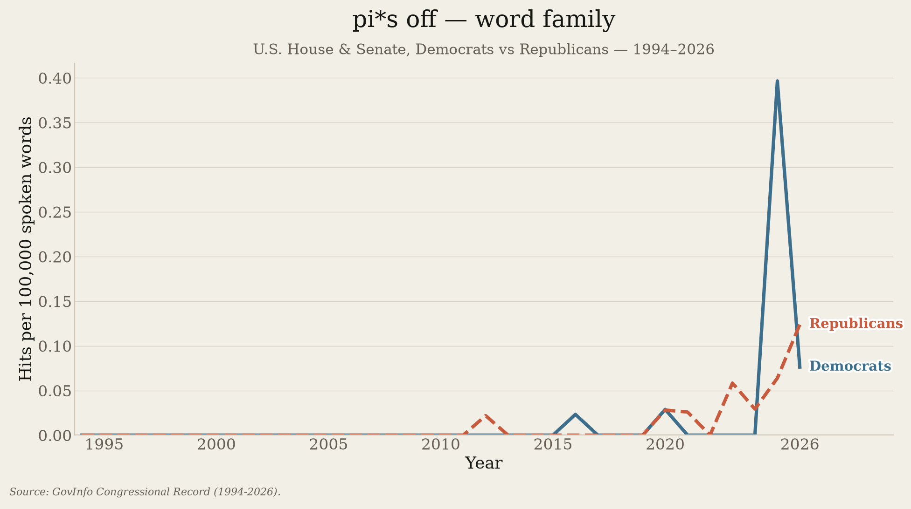
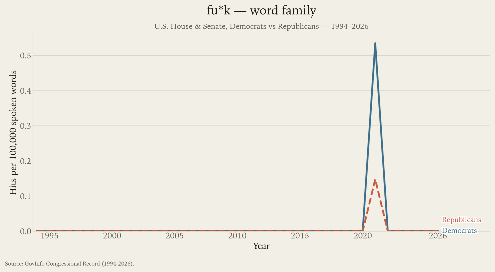
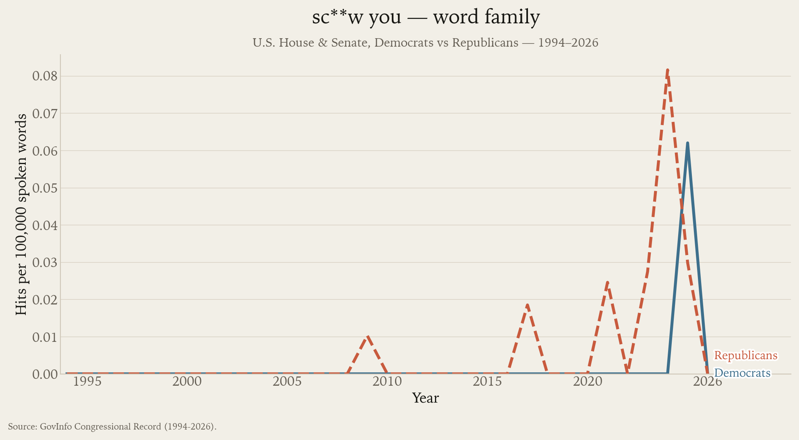
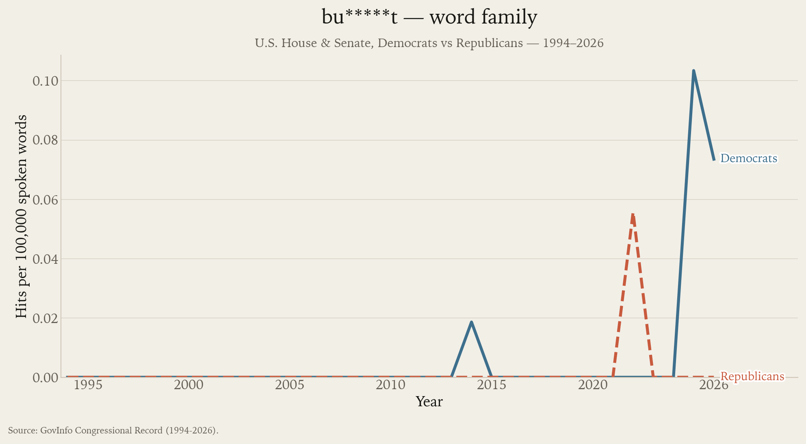
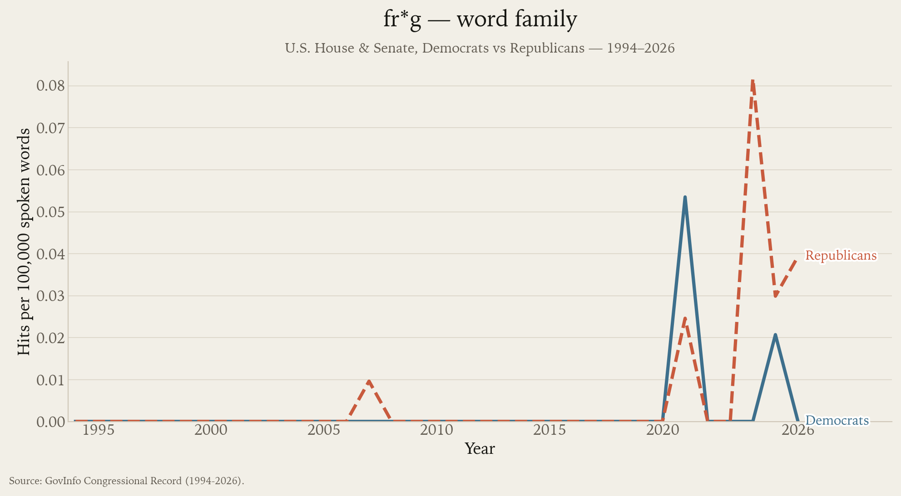

Congress / Vocabulary
Ten swear-word families
The most-used families in member-attributed House and Senate text, ranked by total matches. Variants are combined; annual rates use each party's attributed word total.
Lexical matches in published member-attributed text, not verified personally uttered curses. Quotation-mark masking and inserted-material detection are imperfect; literal uses and quoted or printed material can still match.
These graphs use GovInfo member-level data, not the separate Stanford series back to 1873.
da*n
1,149 matched uses across the covered period. Grouped forms: da***t, da*n, da***d, g*d da*n, go******t, go****n, go******d.

he*l
477 matched uses across the covered period. Grouped forms: go to he*l, he*l of a, he****a, wh*t the he*l.

cr*p
441 matched uses across the covered period. Grouped forms: cr*p, cr***y.

a*s
69 matched uses across the covered period. Grouped forms: a*s, as**s, ha**-****d, ki*k a*s, ki****g a*s.

ba****d
45 matched uses across the covered period. Grouped forms: ba****d, ba*****s.

pi*s off
33 matched uses across the covered period. Grouped forms: pi*s off, pi***d off, pi***s off, pi****g off.

fu*k
26 matched uses across the covered period. Grouped forms: fu*k, fu*k you, fu****g.

sc**w you
11 matched uses across the covered period. Grouped forms: sc**w you.

bu*****t
10 matched uses across the covered period. Grouped forms: bu*****t.

fr*g
10 matched uses across the covered period. Grouped forms: fr****n, fr*****g.

Download yearly counts (CSV) · Grouped forms and coverage (JSON)